ggplot(grasa_ent, aes(x = 2.54 * estatura, y = 0.454 * peso)) +
geom_point() + xlab("Estatura (cm)") + ylab("Peso (kg)")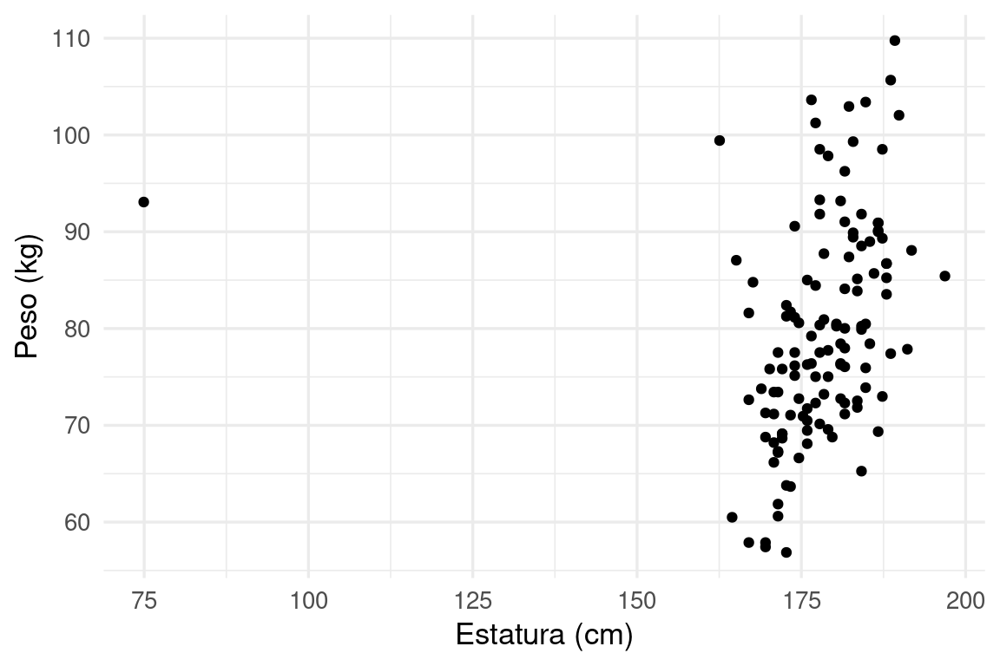
El enfoque que vimos arriba, en donde dividemos la muestra en dos partes al azar, es la manera más fácil de seleccionar modelos. En general, el proceso es el siguiente:
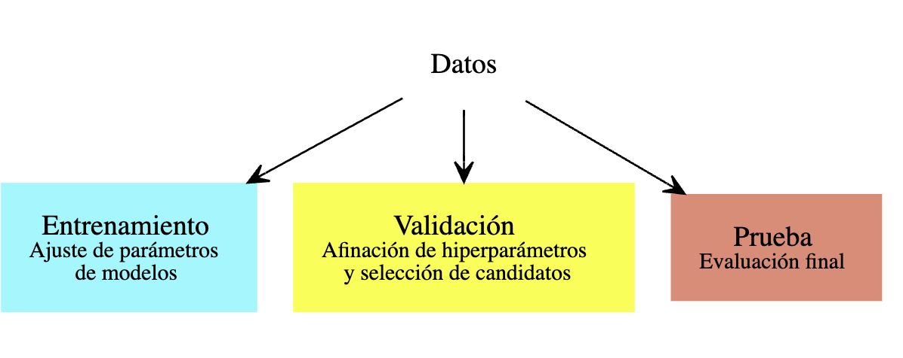
Cuando tenemos datos abundantes, este enfoque es el usual. Por ejemplo, podemos dividir la muestra en 50-25-25 por ciento. Ajustamos modelos con el primer 50%, evaluamos y seleccionamos con el segundo 25% y finalmente, si es necesario, evaluamos el modelo final seleccionado con la muestra final de 25%.
La razón de este proceso es que así podemos ir y venir entre entrenamiento y validación, buscando mejores enfoques y modelos, y no ponemos en riesgo la estimación final del error, o evaluación de calibración de intervalos o probabilidades. (Pregunta: ¿por qué probar agresivamente buscando mejorar el error de validación podría ponder en riesgo la estimación final del error del modelo seleccionado? )
Pudes ver el ejemplo anterior donde usamos esta estrategia para evaluar distintos valores de \(\lambda\).
Por ejemplo: supongamos que hacemos un modelo para predecir impago. Quizá nuestro conjunto de entrenamiento tiene pocas personas de cierta región del país. Esto no quiere decir que no podamos aplicar nuestros métodos, siempre y cuando nuestra muesra de validación/prueba tenga suficientes ejemplos para asegurarnos de que nuestro desempeño no es malo en esas regiones (y por tanto produce resultados indeseables en la toma de decisiones).
Para decidir de antemano los tamaños de validación y prueba, tenemos que tener una idea de qué tanto varía el error de caso a caso (la varianza), si queremos hacer estimaciones en subgrupos de datos (que requerirán tamaño de muestra suficiente también), y cuánto es aceptable como error de estimación del desempeño predictivo, que generalmente no queremos que sea más del 25%, por ejemplo. En caso de usar muestras relativamente chicas de validación o prueba, es necesario estimar el error de estimación del desempeño.
En muchos casos, no queremos apartar una muestra de validación para seleccionar modelos, pues no tenemos muchos datos (al dividir la muestra obtendríamos un modelo relativamente malo en relación al que resulta de todos los datos, o obtendríamos un modelo que no podemos evaluar apropiadamente).
Un criterio para afinar hiperparámetros (como regularización) es el de validación cruzada, que es un método computacional para producir una estimación interna (usando sólo muestra de entrenamiento) del error de predicción.
Validación cruzada también tiene nos da diagnósticos adicionales para entender la variación del desempeño según el conjunto de datos de entrenamiento que usemos, algo que es más difícil ver si solo tenemos una muestra de validación.
En validación cruzada (con \(k\) vueltas), construimos al azar una partición, con tamaños similares, de la muestra de entrenamiento \({\mathcal L}=\{ (x_i,y_i)\}_{i=1}^n\):
\[ {\mathcal L}={\mathcal L}_1\cup {\mathcal L}_2\cup\cdots\cup {\mathcal L}_k.\]
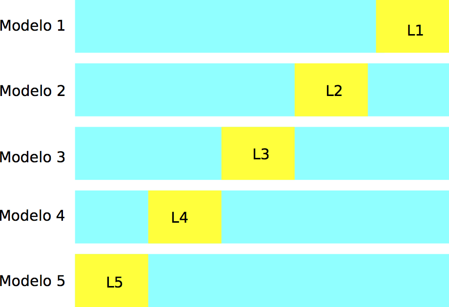
Construimos \(k\) modelos distintos, digamos \(\hat{f}_j\), usando solamente la muestra \({\mathcal L}-{\mathcal L}_j\), para \(j=1,2,\ldots, k\). Cada uno de estos modelos lo evaluamos usando la parte que no usamos para entrenarlo, \({\mathcal L}_j\), para obtener una estimación honesta del error del modelo \(\hat{f}_k\), a la que denotamos por \(\hat{e}_j\).
Notemos entonces que tenemos \(k\) estimaciones del error \(\hat{e}_1,\ldots, \hat{e}_k\), una para cada uno de los modelos que construimos. La idea ahora es que
Consideremos nuestro problema de predicción de grasa corporal. Definimos el flujo de procesamiento, e indicamos qué parametros queremos afinar:
Examinamos brevemente los datos
ggplot(grasa_ent, aes(x = 2.54 * estatura, y = 0.454 * peso)) +
geom_point() + xlab("Estatura (cm)") + ylab("Peso (kg)")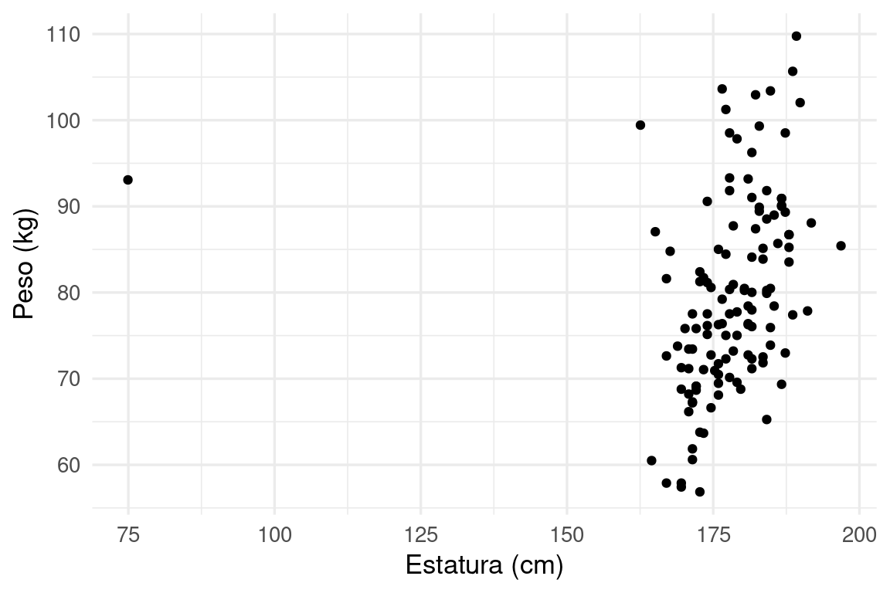
Y observamos un datos que es probablemente un error de captura, o quizá una forma de cuerpo para la que no necesariamente quisiéramos hacer predicciones con nuestro modelo. Incluímos este filtro en nuestra receta:
grasa_receta <- recipe(grasacorp ~ ., grasa_ent) |>
step_filter(estatura < 120)
# con tune() indicamos que ese parámetro será afinado
modelo_regularizado <- linear_reg(mixture = 0, penalty = tune()) |>
set_engine("glmnet", lambda.min.ratio = 1e-20)
flujo_reg <- workflow() |>
add_model(modelo_regularizado) |>
add_recipe(grasa_receta)# construimos conjunto de parámetros
bf_set <- parameters(penalty(range = c(-2, 2), trans = log10_trans()))
# construimos un grid para probar valores individuales
bf_grid <- grid_regular(bf_set, levels = 50)
bf_grid# A tibble: 50 × 1
penalty
<dbl>
1 0.01
2 0.0121
3 0.0146
4 0.0176
5 0.0212
6 0.0256
7 0.0309
8 0.0373
9 0.0450
10 0.0543
# ℹ 40 more rowsYa hora construimos los cortes de validación cruzada. Haremos validación cruzada 10
validacion_particion <- vfold_cv(grasa_ent, v = 10)
# tiene información de índices en cada "fold" o "doblez"vuelta"
validacion_particion# 10-fold cross-validation
# A tibble: 10 × 2
splits id
<list> <chr>
1 <split [113/13]> Fold01
2 <split [113/13]> Fold02
3 <split [113/13]> Fold03
4 <split [113/13]> Fold04
5 <split [113/13]> Fold05
6 <split [113/13]> Fold06
7 <split [114/12]> Fold07
8 <split [114/12]> Fold08
9 <split [114/12]> Fold09
10 <split [114/12]> Fold10Y corremos sobre todo el grid los modelos, probando con los cortes de validación cruzada:
metricas_vc <- tune_grid(flujo_reg,
resamples = validacion_particion,
grid = bf_grid,
metrics = metric_set(rmse, mae))
metricas_vc |> unnest(.metrics)# A tibble: 1,000 × 8
splits id penalty .metric .estimator .estimate .config .notes
<list> <chr> <dbl> <chr> <chr> <dbl> <chr> <list>
1 <split [113/13]> Fold01 0.01 rmse standard 3.86 Prepro… <tibble>
2 <split [113/13]> Fold01 0.0121 rmse standard 3.86 Prepro… <tibble>
3 <split [113/13]> Fold01 0.0146 rmse standard 3.86 Prepro… <tibble>
4 <split [113/13]> Fold01 0.0176 rmse standard 3.86 Prepro… <tibble>
5 <split [113/13]> Fold01 0.0212 rmse standard 3.86 Prepro… <tibble>
6 <split [113/13]> Fold01 0.0256 rmse standard 3.86 Prepro… <tibble>
7 <split [113/13]> Fold01 0.0309 rmse standard 3.86 Prepro… <tibble>
8 <split [113/13]> Fold01 0.0373 rmse standard 3.87 Prepro… <tibble>
9 <split [113/13]> Fold01 0.0450 rmse standard 3.87 Prepro… <tibble>
10 <split [113/13]> Fold01 0.0543 rmse standard 3.87 Prepro… <tibble>
# ℹ 990 more rowsVemos que esta función da un valor del error para cada vuelta de validación cruzada, y cada valor de lambda que pusimos en el grid:
metricas_vc |> unnest(.metrics) |> group_by(id, .metric) |> count()# A tibble: 20 × 3
# Groups: id, .metric [20]
id .metric n
<chr> <chr> <int>
1 Fold01 mae 50
2 Fold01 rmse 50
3 Fold02 mae 50
4 Fold02 rmse 50
5 Fold03 mae 50
6 Fold03 rmse 50
7 Fold04 mae 50
8 Fold04 rmse 50
9 Fold05 mae 50
10 Fold05 rmse 50
11 Fold06 mae 50
12 Fold06 rmse 50
13 Fold07 mae 50
14 Fold07 rmse 50
15 Fold08 mae 50
16 Fold08 rmse 50
17 Fold09 mae 50
18 Fold09 rmse 50
19 Fold10 mae 50
20 Fold10 rmse 50Y ahora podemos graficar:
ggplot(metricas_vc |> unnest(.metrics) |> filter(.metric == "rmse"),
aes(x = penalty, y = .estimate)) + geom_point() +
scale_x_log10()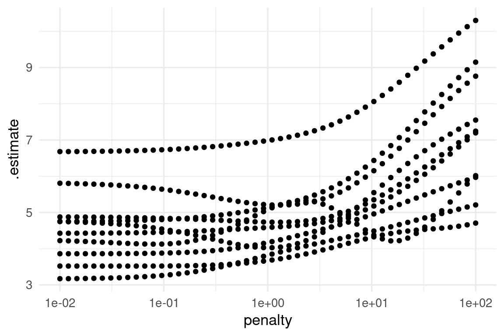
Nótese que para valores bajos de penalización hay variación considerable en el error (los modelos cambian mucho de corrida a corrida). Para resumir, como explicamos arriba, podemos resumir con media y error estándar:
metricas_resumen <- metricas_vc |>
collect_metrics()
metricas_resumen# A tibble: 100 × 7
penalty .metric .estimator mean n std_err .config
<dbl> <chr> <chr> <dbl> <int> <dbl> <chr>
1 0.01 mae standard 3.94 10 0.312 Preprocessor1_Model01
2 0.01 rmse standard 4.61 10 0.330 Preprocessor1_Model01
3 0.0121 mae standard 3.93 10 0.311 Preprocessor1_Model02
4 0.0121 rmse standard 4.61 10 0.330 Preprocessor1_Model02
5 0.0146 mae standard 3.93 10 0.311 Preprocessor1_Model03
6 0.0146 rmse standard 4.60 10 0.330 Preprocessor1_Model03
7 0.0176 mae standard 3.93 10 0.310 Preprocessor1_Model04
8 0.0176 rmse standard 4.60 10 0.330 Preprocessor1_Model04
9 0.0212 mae standard 3.93 10 0.309 Preprocessor1_Model05
10 0.0212 rmse standard 4.60 10 0.330 Preprocessor1_Model05
# ℹ 90 more rowsg_1 <- ggplot(metricas_resumen |> filter(.metric == "rmse"),
aes(x = penalty, y = mean, ymin = mean - std_err, ymax = mean + std_err)) +
geom_linerange() +
geom_point(colour = "red") +
scale_x_log10()
g_1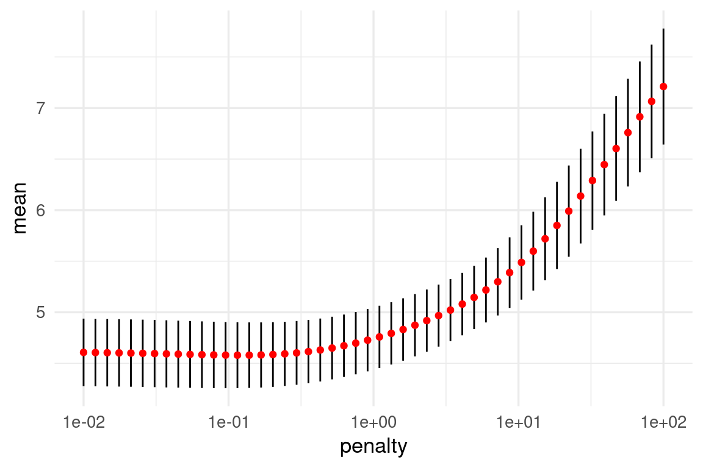
Nótese que la estimación del error de predicción por validación cruzada incluye un error de estimación (intervalos). Esto nos da dos opciones para escoger la lambda final:
Podemos obtener estos resultados de esta forma:
metricas_vc |> show_best(metric = "rmse")# A tibble: 5 × 7
penalty .metric .estimator mean n std_err .config
<dbl> <chr> <chr> <dbl> <int> <dbl> <chr>
1 0.115 rmse standard 4.58 10 0.322 Preprocessor1_Model14
2 0.139 rmse standard 4.58 10 0.321 Preprocessor1_Model15
3 0.0954 rmse standard 4.58 10 0.324 Preprocessor1_Model13
4 0.168 rmse standard 4.58 10 0.319 Preprocessor1_Model16
5 0.0791 rmse standard 4.58 10 0.325 Preprocessor1_Model12minimo <- metricas_vc |> select_best(metric = "rmse")
minimo_ee <- metricas_vc |> select_by_one_std_err(metric = "rmse", desc(penalty))En la gráfica se muestran las dos posiblidades:
g_1 +
geom_vline(data= minimo, aes(xintercept = penalty), colour = "blue") +
geom_vline(data = minimo_ee, aes(xintercept = penalty), colour = "blue")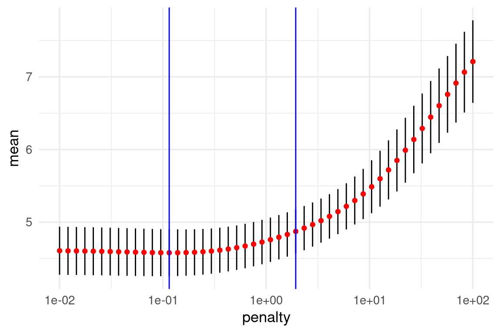
Nota: aún cuando la mejora en desempeño predictivo al usar regularización no sea muy grande, obtenemos modelos más parsimoniosos, interpretables y robustos al aplicarla.
Finalmente, graficamos sobre la muestra de prueba
modelo_final <- finalize_workflow(flujo_reg, minimo_ee) |>
fit(grasa_ent)
preds_tbl <- predict(modelo_final, testing(grasa_particion)) |>
bind_cols(testing(grasa_particion))
ggplot(preds_tbl, aes(x = .pred, y = grasacorp)) +
geom_point() +
geom_abline(colour = "red") +
coord_obs_pred()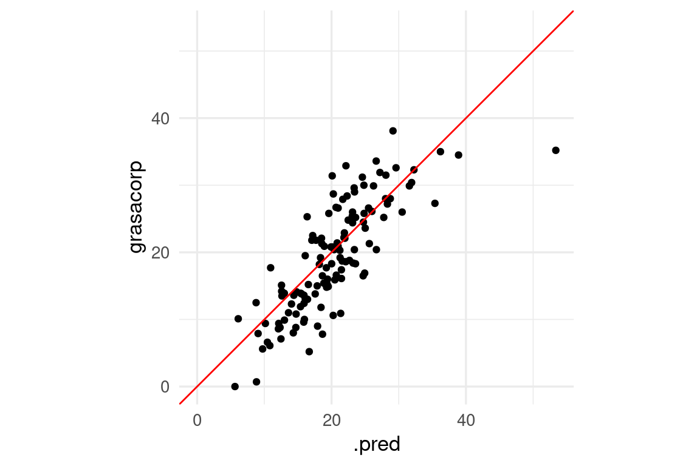
Observación: Nótese que obtenemos en particular una predicción con un error considerablemente más grande que el resto: Si examinamos:
preds_tbl |> mutate(error_abs = abs(grasacorp - .pred)) |>
arrange(desc(error_abs)) |> head()# A tibble: 6 × 16
.pred grasacorp edad peso estatura cuello pecho abdomen cadera muslo rodilla
<dbl> <dbl> <dbl> <dbl> <dbl> <dbl> <dbl> <dbl> <dbl> <dbl> <dbl>
1 53.4 35.2 46 363. 72.2 51.2 136. 148. 148. 87.3 49.1
2 16.7 5.2 55 142. 67.2 35.2 92.7 82.8 91.9 54.4 35.2
3 20.1 31.4 67 164. 67.8 38.4 97.7 95.8 97.1 54.8 38.2
4 18.7 7.8 27 216 76 39.4 104. 90.9 108. 66.2 39.2
5 22.1 32.9 44 166 65.5 39.1 101. 93.9 100. 58.9 37.6
6 21.4 10.9 55 180. 68.8 41.1 107. 95.3 98.2 57.4 37.1
# ℹ 5 more variables: tobillo <dbl>, biceps <dbl>, antebrazo <dbl>,
# muñeca <dbl>, error_abs <dbl>Y vemos que el peso de este ejemplo sale fuera del rango que vimos en entrenamiento:
preds_tbl |> mutate(error_abs = abs(grasacorp - .pred)) |>
mutate(error_grande = error_abs > 16 ) |>
ggplot(aes(x = estatura, y = peso, colour = factor(error_grande))) +
geom_point()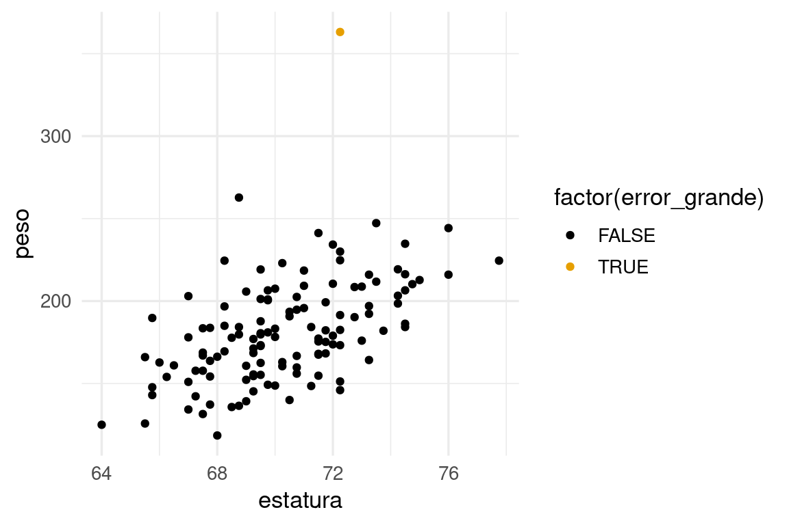
Lo que explica el tamaño del error para este caso.
Podemos comparar el desempeño estimado con validación cruzada con el de muestra de prueba: Consideremos nuestro ejemplo simulado de regresión logística. Repetiremos varias veces el ajuste y compararemos el error de prueba con el estimado por validación cruzada:
set.seed(28015)
a_vec <- rnorm(100, 0, 0.2)
a <- tibble(term = paste0('V', 1:length(a_vec)), valor = a_vec)
modelo_1 <- linear_reg(penalty = 0.01) |>
set_engine("glmnet", lambda.min.ratio = 1e-20)
flujo_1 <- workflow() |>
add_model(modelo_1) |>
add_formula(y ~ .)
sim_datos <- function(n, beta){
p <- nrow(beta)
mat_x <- matrix(rnorm(n * p, 0, 0.5), n, p) + rnorm(n)
colnames(mat_x) <- beta |> pull(term)
beta_vec <- beta |> pull(valor)
f_x <- (mat_x %*% beta_vec)
y <- as.numeric(f_x) + rnorm(n, 0, 1)
datos <- as_tibble(mat_x) |>
mutate(y = y)
datos
}
simular_evals <- function(rep, flujo, beta){
datos <- sim_datos(n = 4000, beta = beta[1:40, ])
particion <- initial_split(datos, 0.05)
datos_ent <- training(particion)
datos_pr <- testing(particion)
# evaluar con muestra de prueba
metricas <- metric_set(rmse)
flujo_ajustado <- flujo_1 |> fit(datos_ent)
eval_prueba <- predict(flujo_ajustado, datos_pr) |>
bind_cols(datos_pr |> select(y)) |>
metricas(y, .pred)
eval_entrena <- predict(flujo_ajustado, datos_ent) |>
bind_cols(datos_ent |> select(y)) |>
metricas(y, .pred)
# particionar para validación cruzada
particiones_val_cruzada <- vfold_cv(datos_ent, v = 10)
eval_vc <- flujo_1 |>
fit_resamples(resamples = particiones_val_cruzada, metrics = metricas) |>
collect_metrics()
res_tbl <-
eval_prueba |> mutate(tipo = "prueba") |>
bind_rows(eval_entrena |> mutate(tipo = "entrenamiento")) |>
bind_rows(eval_vc |>
select(.metric, .estimator, .estimate = mean) |>
mutate(tipo = "val_cruzada"))
}set.seed(82853)
evals_tbl <- tibble(rep = 1:25) |>
mutate(data = map(rep, ~ simular_evals(.x, flujo_1, beta = a))) |>
unnest(data)ggplot(evals_tbl |>
filter(.metric == "rmse") |>
pivot_wider(names_from = tipo, values_from = .estimate) |>
pivot_longer(cols = c(entrenamiento, val_cruzada), names_to = "tipo"),
aes(x = prueba, y = value)) +
geom_point() + facet_wrap(~ tipo) +
geom_abline(colour = "red") +
xlab("Error de predicción (prueba)") +
ylab("Error estimado") + coord_equal() + xlim(0.8, 1.2)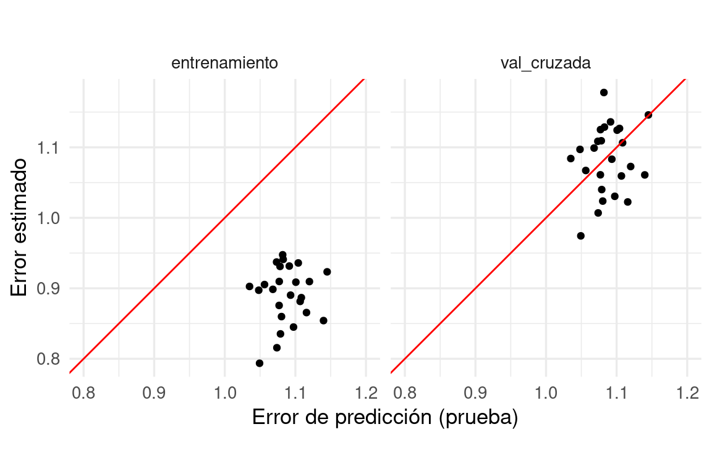
Observa los rangos de los ejes. Vemos que aunque los dos tipos de estimaciones están centradas en lugares similares, el error por validación cruzada es ligeramente pesimista (como esperábamos), y no está muy correlacionado con el error de prueba.
Sin embargo, cuando usamos validación cruzada para seleccionar modelos tenemos lo siguiente:
set.seed(8559)
datos <- sim_datos(n = 4000, beta = a[1:40, ])
modelo <- linear_reg(mixture = 0, penalty = tune()) |>
set_engine("glmnet")
flujo <- workflow() |>
add_model(modelo) |>
add_formula(y ~ .)
# crear partición de análisis y evaluación
particion_val <- validation_split(datos, 0.05)
candidatos <- tibble(penalty = exp(seq(-5, 5, 1)))
# evaluar
val_datos <- tune_grid(flujo, resamples = particion_val, grid = candidatos,
metrics = metric_set(rmse, mae)) |>
collect_metrics() |>
select(penalty, .metric, mean) |>
mutate(tipo ="datos de validación")# extraer datos de entrenamiento
datos_ent <- analysis(particion_val$splits[[1]])
particion_vc <- vfold_cv(datos_ent, v = 10)
val_cruzada <- tune_grid(flujo, resamples = particion_vc, grid = candidatos,
metrics = metric_set(rmse, mae)) |>
collect_metrics() |>
select(penalty, .metric, mean) |>
mutate(tipo = "validación cruzada")comparacion_val <- bind_rows(val_datos, val_cruzada) |>
filter(.metric == "mae")
ggplot(comparacion_val, aes(x = penalty, y = mean, colour = tipo)) +
geom_line() + geom_point() +
facet_wrap(~.metric) +
scale_x_log10()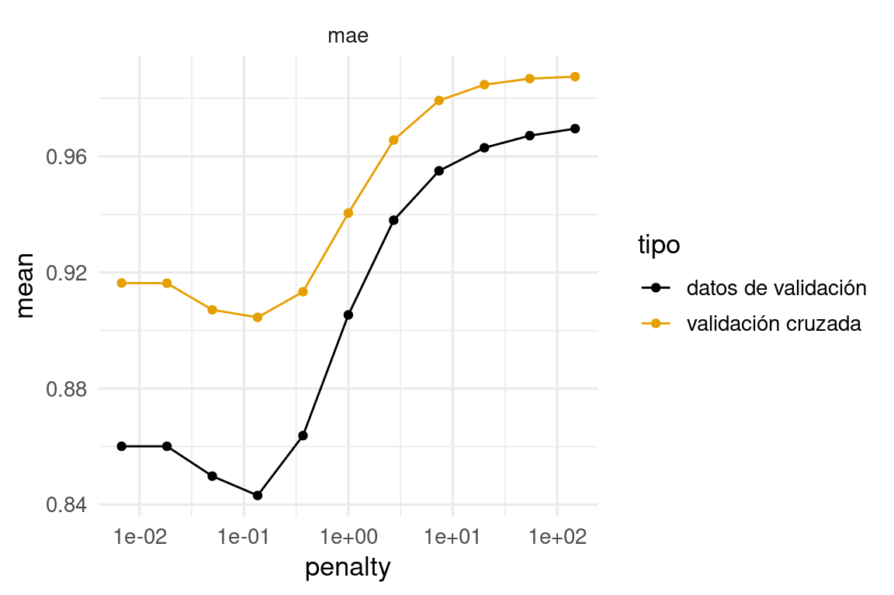
Vemos que la estimación en algunos casos no es tan buena, aún cuando todos los datos fueron usados. Pero el mínimo se encuentra en lugares muy similares. La razón es:
Validación cruzada considera perturbaciones del conjunto de entrenamiento, de forma que lo que intenta evaluar es el error producido, para cada lambda, sobre distintas muestras de entrenamiento. En realidad nosotros queremos evaluar el error de predicción del modelo que ajustamos. Validación cruzada es más un estimador del error esperado de predicción sobre los modelos que ajustaríamos con distintas muestras de entrenamiento.
El resultado es que:
Con el objeto de reducir la varianza de las estimaciones por validación cruzada, podemos repetir varias veces usando distintas particiones seleccionadas al azar.
Por ejemplo, podemos repetir 5 veces validación cruzada con 10 vueltas, y ajustamos un total de 50 modelos. Esto no es lo mismo que validación cruzada con 50 vueltas. Hay razones para no subdividir tanto la muestra de entrenamiento:
En nuestro ejemplo de grasa corporal:
set.seed(883)
# validación cruzada repetida
validacion_particion <- vfold_cv(grasa_ent, v = 10, repeats = 5)
# tiene información de índices en cada "fold" o "doblez" o "vuelta"
validacion_particion# 10-fold cross-validation repeated 5 times
# A tibble: 50 × 3
splits id id2
<list> <chr> <chr>
1 <split [113/13]> Repeat1 Fold01
2 <split [113/13]> Repeat1 Fold02
3 <split [113/13]> Repeat1 Fold03
4 <split [113/13]> Repeat1 Fold04
5 <split [113/13]> Repeat1 Fold05
6 <split [113/13]> Repeat1 Fold06
7 <split [114/12]> Repeat1 Fold07
8 <split [114/12]> Repeat1 Fold08
9 <split [114/12]> Repeat1 Fold09
10 <split [114/12]> Repeat1 Fold10
# ℹ 40 more rowsmetricas_vc <- tune_grid(flujo_reg,
resamples = validacion_particion,
grid = bf_grid,
metrics = metric_set(rmse, mae))
mejor <- select_best(metricas_vc, metric = "rmse")
mejor_1ee <- select_by_one_std_err(metricas_vc, metric = "rmse", desc(penalty))
metricas_vc |> unnest(.metrics)# A tibble: 5,000 × 9
splits id id2 penalty .metric .estimator .estimate .config
<list> <chr> <chr> <dbl> <chr> <chr> <dbl> <chr>
1 <split [113/13]> Repeat1 Fold01 0.01 rmse standard 4.18 Preproc…
2 <split [113/13]> Repeat1 Fold01 0.0121 rmse standard 4.18 Preproc…
3 <split [113/13]> Repeat1 Fold01 0.0146 rmse standard 4.18 Preproc…
4 <split [113/13]> Repeat1 Fold01 0.0176 rmse standard 4.18 Preproc…
5 <split [113/13]> Repeat1 Fold01 0.0212 rmse standard 4.18 Preproc…
6 <split [113/13]> Repeat1 Fold01 0.0256 rmse standard 4.18 Preproc…
7 <split [113/13]> Repeat1 Fold01 0.0309 rmse standard 4.18 Preproc…
8 <split [113/13]> Repeat1 Fold01 0.0373 rmse standard 4.18 Preproc…
9 <split [113/13]> Repeat1 Fold01 0.0450 rmse standard 4.18 Preproc…
10 <split [113/13]> Repeat1 Fold01 0.0543 rmse standard 4.18 Preproc…
# ℹ 4,990 more rows
# ℹ 1 more variable: .notes <list>Vemos que esta función da un valor del error para cada vuelta de validación cruzada, y cada valor de lambda que pusimos en el grid:
metricas_vc |> unnest(.metrics) |> group_by(id, .metric) |> count()# A tibble: 10 × 3
# Groups: id, .metric [10]
id .metric n
<chr> <chr> <int>
1 Repeat1 mae 500
2 Repeat1 rmse 500
3 Repeat2 mae 500
4 Repeat2 rmse 500
5 Repeat3 mae 500
6 Repeat3 rmse 500
7 Repeat4 mae 500
8 Repeat4 rmse 500
9 Repeat5 mae 500
10 Repeat5 rmse 500Y obtenemos:
metricas_resumen <- metricas_vc |>
collect_metrics()
g_1 <- ggplot(metricas_resumen |> filter(.metric == "rmse"),
aes(x = penalty, y = mean, ymin = mean - std_err, ymax = mean + std_err)) +
geom_linerange() +
geom_point(colour = "red") +
scale_x_log10() +
geom_vline(xintercept = c(mejor$penalty, mejor_1ee$penalty), colour = "blue")
g_1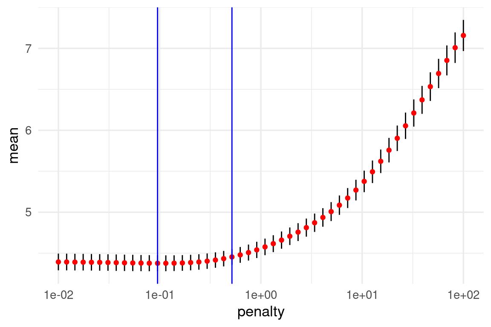